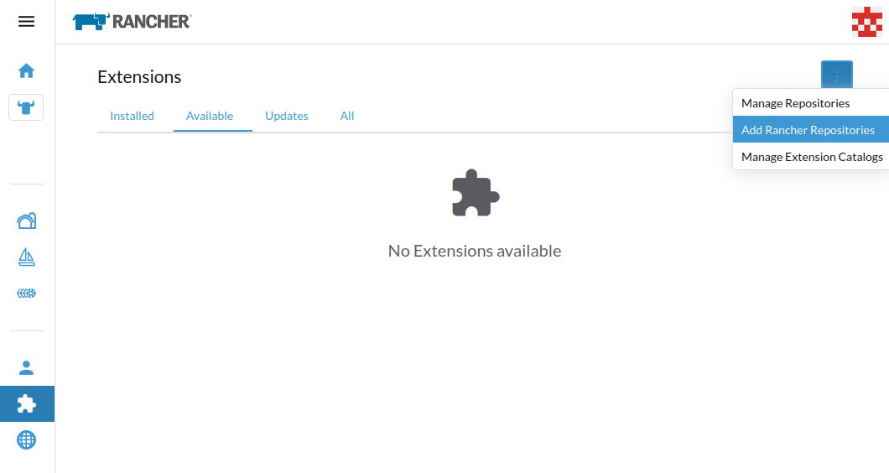
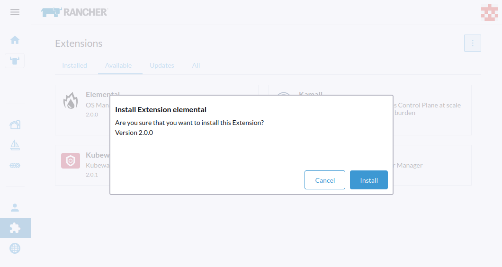
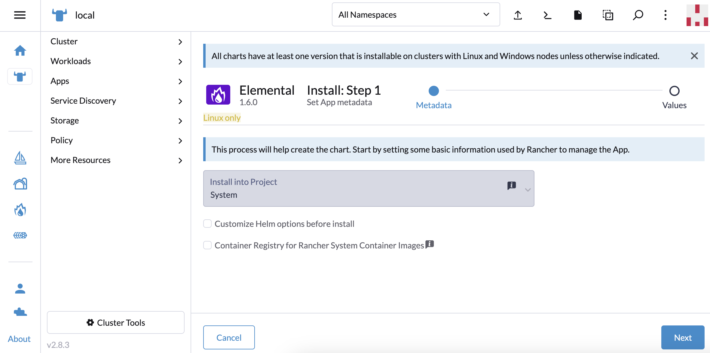
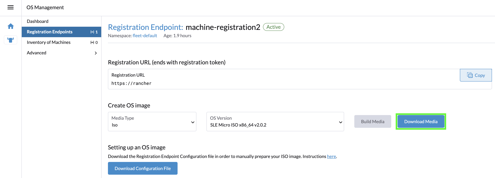
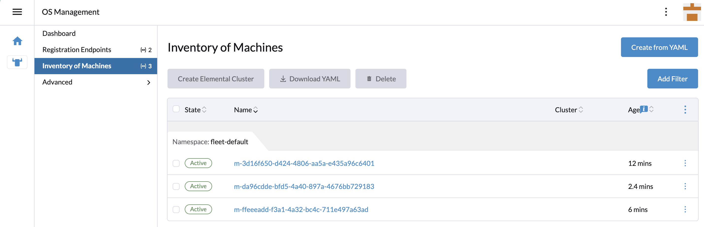
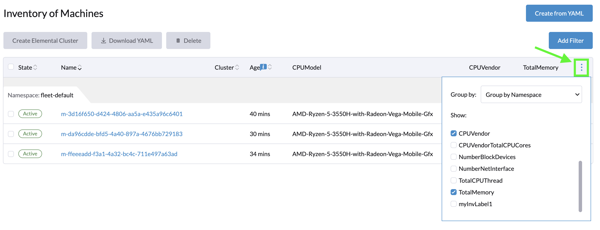
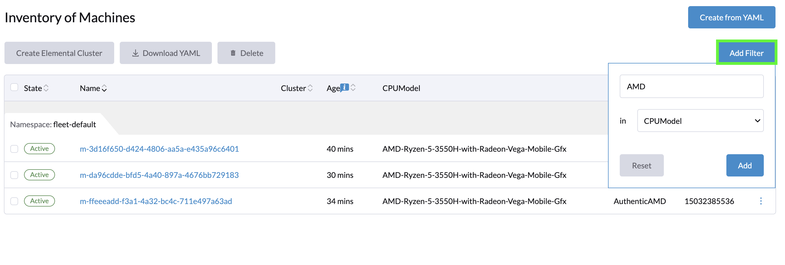

|
本文档采用自动化机器翻译技术翻译。 尽管我们力求提供准确的译文，但不对翻译内容的完整性、准确性或可靠性作出任何保证。 若出现任何内容不一致情况，请以原始 英文 版本为准，且原始英文版本为权威文本。 |
SUSE® Rancher Prime: OS Manager 视觉方式
|
以下说明至少需要 Rancher 2.9.x。 |
此快速入门将向您展示如何将 SUSE® Rancher Prime: OS Manager 插件和操作符部署到现有的 Rancher 管理实例中。
安装后，您将能够基于 RKE2 或 K3s 提供一个新的 SUSE® Rancher Prime: OS Manager 集群。
但是，如果您想安装暂存或开发操作符，则只能在 CLI 模式 中进行。
添加官方 Rancher 扩展储存库
如果 Elemental 扩展不可用，您需要添加 Official Rancher Extensions Repository：

如果无法通过扩展 UI 设置添加此储存库，可以通过https://documentation.suse.com/cloudnative/rancher-manager/latest/en/cluster-admin/helm-charts-in-rancher/helm-charts-in-rancher.html#_manage_repositories[添加] https://github.com/rancher/ui-plugin-charts``git 储存库的方式进行手动管理，或者通过应用以下资源：
apiVersion: catalog.cattle.io/v1
kind: ClusterRepo
metadata:
name: rancher-ui-charts
spec:
gitBranch: main
gitRepo: https://github.com/rancher/ui-plugin-charts安装 Elemental 插件
在启用 Rancher 管理扩展支持后，您可以按照以下步骤安装 elemental 插件：
-
在
Available标签下，您将看到可用的elemental插件

|
如果 |
-
点击
Install按钮，将出现弹出窗口，再次点击Install以继续。

-
在
Installed标签下，elemental插件现在已列出。
|
如果 |
一旦安装了 elemental 插件，您可以在 Rancher Manager 菜单中看到 OS Management 选项，如果没有看到，请刷新页面。

安装元素操作符
|
以下指南将向您展示如何通过 SUSE® Rancher Prime: OS Manager 用户界面安装操作符。但您也可以直接从市场安装。 |
在导航菜单中单击操作系统管理按钮。
如果操作符尚未安装，元素用户界面将通过单击 Install SUSE® Rancher Prime: OS Manager Operator 按钮让您部署它：

它将重定向您到 Rancher 市场以安装操作符。
单击 Next 按钮：

在此屏幕中，您可以自定义或使用默认值，单击 Install 以继续：

您应该在 `cattle-elemental-system` 名称空间中看到 ``elemental-operator-crds``和 `elemental-operator` 已部署：

|
如果您没有看到它们，请确保在页面顶部选择正确的名称空间。 |
添加机器注册端点
在操作系统管理仪表板中，单击 Create Registration Endpoint 按钮。

现在，您可以在各自的位置输入每个详细信息，或者可以将其编辑为 YAML 一次性创建端点。在这里我们将编辑每个字段。

|
主要选项
|
一旦您创建了机器注册端点，它应该显示为活动状态。

准备安装（种子）镜像
现在这是最后一步，您需要准备一个包含初始注册配置的种子镜像，以便它可以自动注册、安装并作为集群的一部分完全部署。文件的内容仅仅是节点需要注册的注册 URL 和适当的服务器证书，以便它可以安全连接。
然后可以使用此种子镜像来配置无限数量的机器。
种子镜像作为 Kubernetes 资源创建，可以使用 Build Media 按钮构建，但首先，您必须选择 ISO 或 RAW 镜像。
与需要两个设备的 ISO 相反（一个设备用于 ISO，另一个磁盘用于安装 SUSE® Rancher Prime: OS Manager），RAW 镜像允许从单个设备启动并直接在该设备上安装操作系统。 RAW 镜像仅包含一个引导分区和一个恢复分区，并首先以恢复模式启动以安装 SUSE® Rancher Prime: OS Manager（供参考，该过程类似于 重置 过程）。

构建完成后，可以使用 Download Media 按钮下载媒体：

您现在可以使用此镜像启动节点，它们将：
-
使用提供的注册URL进行注册，并为每台机器创建一个`MachineInventory`
-
将SLE Micro安装到指定设备上
-
重引导
机器库存
当节点首次启动时，它们会连接到Rancher Manager，并为每个节点创建一个Machine Inventory。

自定义列基于`Machine Inventory Labels`，您可以在创建`Machine Registration Endpoint`时添加：

在以下截图中，`Hardware Labels`被用作自定义列：
您还可以通过点击三点菜单添加自定义列。

最后，您还可以使用这些标签过滤您的`Machine Inventory`。
例如，如果您只想查看AMD机器，可以按如下方式过滤`CPUModel`：

创建您的第一个SUSE® Rancher Prime: OS Manager集群
现在，让我们使用这些`Machine Inventory`通过点击`Create SUSE® Rancher Prime: OS Manager Cluster`来创建一个集群：

对于您的SUSE® Rancher Prime: OS Manager集群，您可以选择K3s或RKE2作为Kubernetes。

大多数选项来自Rancher，因此我们不会详细说明所有可能性。 如果您想了解更多，请随时查看https://documentation.suse.com/cloudnative/rancher-manager/latest/en/cluster-deployment/configuration/k3s.html[Rancher Manager K3s分发配置文档]或https://documentation.suse.com/cloudnative/rancher-manager/latest/en/cluster-deployment/configuration/rke2.html[Rancher Manager RKE2分发配置文档]。
然而，重要的是要强调`Inventory of Machines Selector Template`部分。
它让您选择要使用哪个`Machine Inventory`来创建您的SUSE® Rancher Prime: OS Manager集群，使用之前定义的`Machine Inventory Labels`：

由于我们的三个机器库存包含标签`CPUVendor`和键`AuthenticAMD`，这三台机器将用于创建SUSE® Rancher Prime: OS Manager集群。